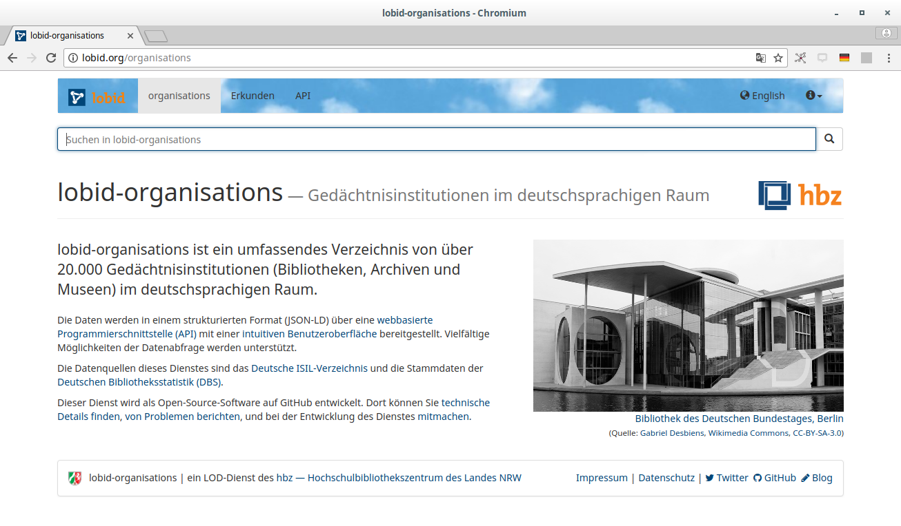
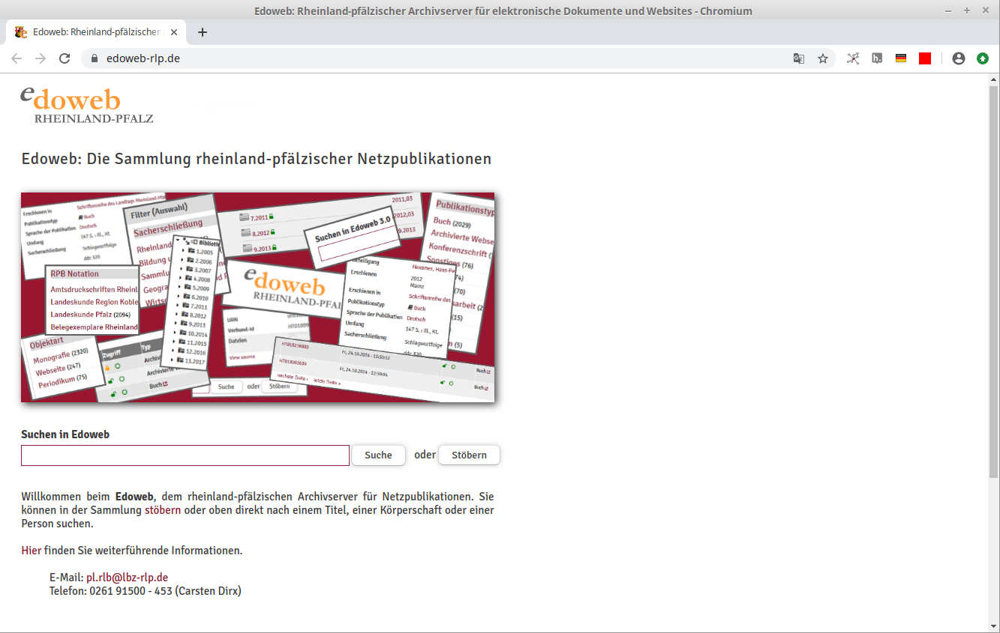
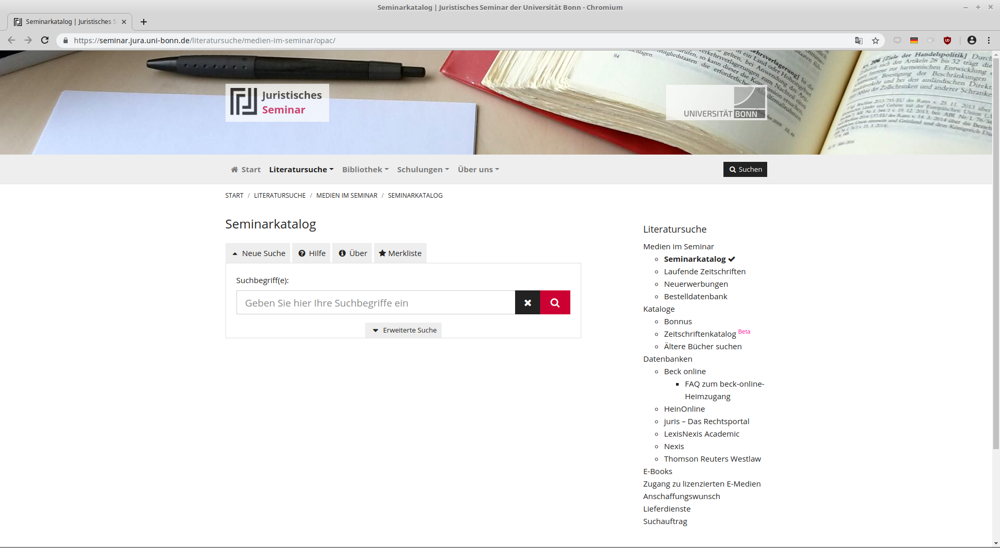
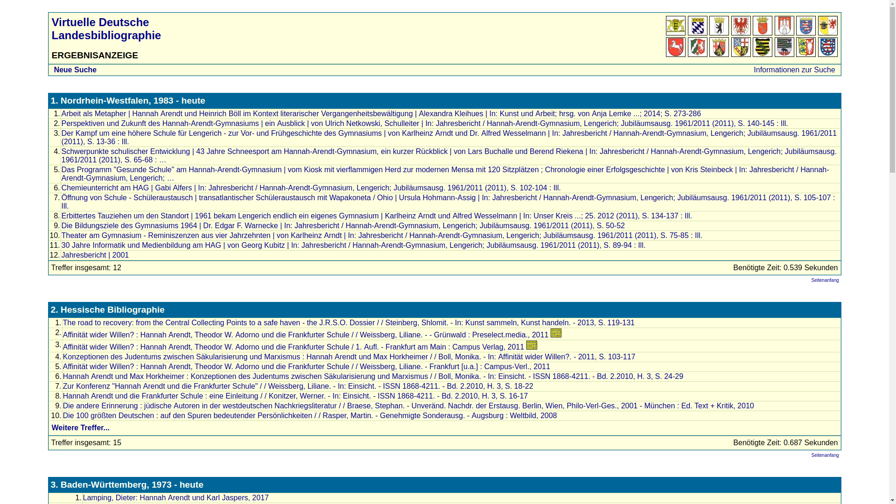
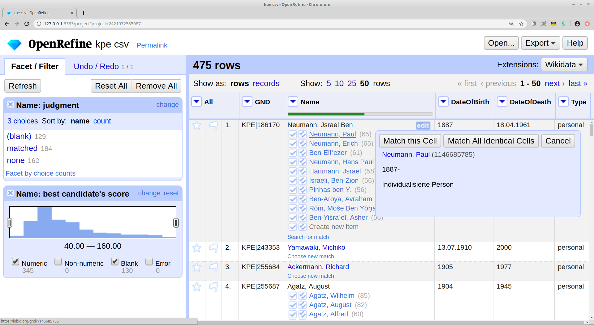
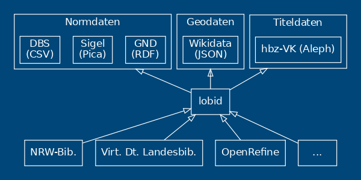
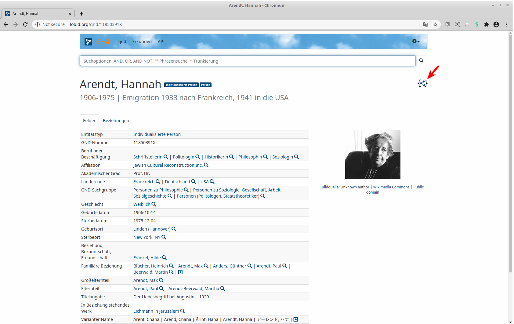
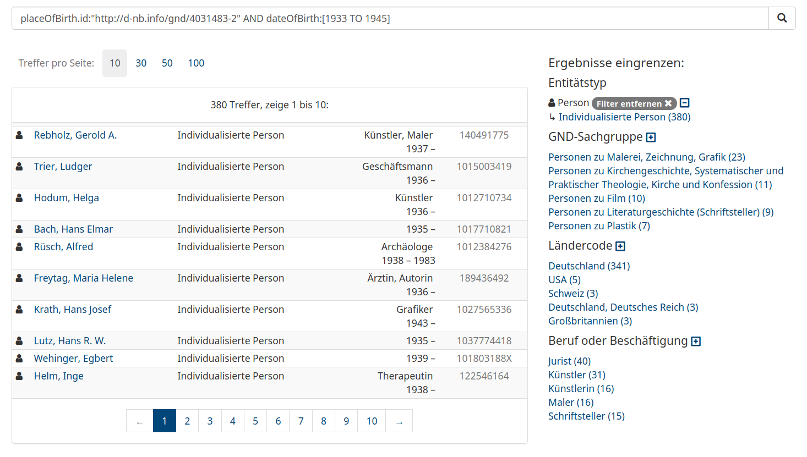
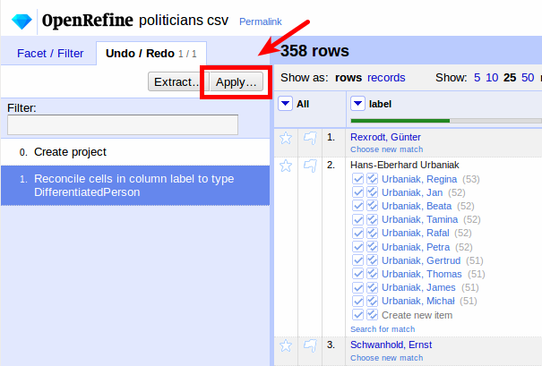

Offene Infrastruktur für bibliothekarische Daten
Linked Open Data, JSON & OpenRefine in der Praxis
Adrian Pohl &
Fabian Steeg
Offene Infrastruktur,
Hochschulbibliothekszentrum NRW (hbz)

WWW, 2022-02-10
Zentrum für Bibliotheks- und Informationswissenschaftliche Weiterbildung, TH Köln (ZBIW)
Diese Präsentation:
https://slides.lobid.org/2022-zbiw/ (PDF)

Seminar-Etikette
Fragen sind stets willkommen
Hilf anderen, wo du kannst
Sei offen für unterschiedliche Fachkenntnisse & Erfahrungen
Adrian
Seit 2008 im hbz, seit 2019 Leitung Offene Infrastruktur
Schwerpunkte: Datenmodellierung, Offene Standards, Kommunikation/Koordination
Fabian
Seit 2012 im hbz, bis 2019 LOD, dann Offene Infrastruktur
Schwerpunkte: Webentwicklung und Datentransformation für lobid.org (etc.)
Und ihr?
Wo und was arbeitet ihr?
Was erwartet ihr von diesem Seminar?
Agenda
| 1. Offene Infrastruktur | |
| 2. Linked Data & JSON-LD | |
| 3. OpenRefine Reconciliation |
Grober Zeitplan
| 1. Offene Infrastruktur | lobid-Dienste und Nutzungsbeispiele | 10:00–10:30 |
| GND, lobid-gnd, Rechercheoberfläche | 10:30–11:00 | |
| 2. Linked Data & JSON-LD | RDF, Linked Data | 11:00–11:30 |
| JSON, JSON-LD, LOUD | 11:30–12:00 | |
| Daten und Abfragemöglichkeiten GND | 12:00–12:30 | |
| Pause | ||
| Daten und Abfragemöglichkeiten Verbundkatalog | 13:30–14:00 | |
| 3. OpenRefine Reconciliation | Grundlagen von OpenRefine und Reconciliation | 14:00–14:30 |
| Verbesserung des Matching auf GND-Einträge | 14:30–15:00 | |
| Datenanreicherung auf Basis der Matches | 15:00–15:30 |
Teil 1:
Offene Infrastruktur
| lobid | lobid-Dienste und Nutzungsbeispiele | 10:00–10:30 |
| GND | GND, lobid-gnd, Rechercheoberfläche | 10:30–11:00 |

Hochschulbibliothekszentrum des Landes Nordrhein-Westfalen, seit 1973
Dienstleistungs- und Entwicklungseinrichtung für digitale Services in Hochschulbibliotheken
Einige Arbeitsbereiche: Verbundkatalog, Suchportal DigiBib, Fernleihe, Konsortiale Erwerbung
hbz-Gruppe Offene Infrastruktur
Nutzung und Pflege von Infrastruktur für die Publikation strukturierter Daten im Web:
Offene Webstandards und darauf aufsetzend kooperative Entwicklung von Spezifikationen (z.b AMB)
Transformation von Alt- und Fremddaten in web-kompatible Strukturen (mit Metafacture)
Publikation strukturierter Daten im Web inkl. APIs (lobid, OERSI, SkoHub)
lobid steht für Linking Open Bibliographic Data
Seit über zehn Jahren die zentrale Komponente der offenen Infrastruktur im hbz
Stellt intuitive, web-basierte Rechercheoberflächen und Schnittstellen bereit
lobid-Dienste
lobid-resources: Daten des hbz-Verbundkatalogs
lobid-organisations: Daten des deutschsprachigen Sigelverzeichnisses und DBS-Stammdaten
lobid-gnd: Gemeinsame Normdatei
lobid-resources

Dokumentation der lobid-resources-API:
https://lobid.org/resources/api
lobid-organisations
Dokumentation der lobid-organisations-API:
https://lobid.org/organisations/api
lobid-gnd

Dokumentation der lobid-gnd-API:
https://lobid.org/gnd/api
lobid – ein zentraler Knoten bibliothekarischer Dateninfrastruktur

lobid: Nutzungsbeispiele

Verbundbibliotheken auf hbz-Website

Basiert auf lobid-Organisationsdaten
VZG-Standortverzeichnis

Basiert auf lobid-Organisationsdaten

Edoweb und Fachrepositorium Lebenswisschenschaften (FRL)

Enge Integration der lobid-Verbunddaten und des lobid-Datenmodells
In Publisso auch GND-ID-Lookup via lobid
GND-Lookup im Fachrepositorium Lebenswissenschaften


NWBib
Webanwendung, die nahezu vollständig auf lobid-Daten basiert
Nutzt das NWBib-Subset in den lobid-Verbunddaten
Informationen zu besitzenden Bibliotheken aus lobid-Organisationsdaten
Themenvorschläge auf Basis von lobid-gnd
NWBib-Suchergebnisliste

Anfrage gegen das NWBib-Subset in lobid-Verbunddaten

Informationen zu besitzenden Bibliotheken (Name, URL, Standort) werden aus lobid geladen

Bibliothekskatalog des Juristischen Seminars der ULB Bonn
Basiert auf täglich aktualisierten lobid-Daten

Discovery-Index der UB Dortmund

Titeldaten zu den Beständen der UB & einiger umliegender Bibliotheken
werden täglich von lobid geholt, transformiert und in den Index geladen

Virtuelle Deutsche Landesbibliographie
Seit 2018 ist nwbib.de in die VDL integriert

Kalliope

Anzeige von externen Links (z.B. Wikipedia) aus lobid-gnd auf Personenseiten

Abgleich und Anreicherung lokaler Archivdaten mit der GND
 Unter Nutzung von OpenRefine und der entsprechenden lobid Reconciliation API
Infoboxen zu Personen aus der GND
 Außerdem Nutzung der lobid Reconciliation API zum
Außerdem Nutzung der lobid Reconciliation API zum Mappen großer Mengen von Personendaten auf die GND
Beispiel: lobid-gnd
Rechercheoberfläche & LOD-API für die GND
Die Gemeinsame Normdatei (GND)
Normdatei für Bibliotheken im deutschsprachigen Raum
Datensätze für Personen, Körperschaften, Konferenzen & Veranstaltungen, Geografika, Schlagwörter, Werke
Für die formale Erfassung einer Ressource und für die inhaltliche Erschließung
In den letzten Jahren wird die GND vermehrt auch von Archiven, Museen und Wissenschaftler*innen genutzt
Die GND-Kooperative
Verantwortlich für die GND ist die GND-Kooperative
Die GND-Kooperative besteht hauptsächlich aus den deutschsprachigen Bibliotheksverbünden, den angeschlossenen Bibliotheken sowie der Deutschen Nationalbibliothek (DNB) als technischer Hoster
GND als LOD von der DNB
Die DNB publiziert die GND unter anderem als Linked Open Data (LOD) unter https://data.dnb.de/opendata/
Zusätzliche Anreicherungen, z.B. Links in EntityFacts
Diese Daten bilden die Grundlage für lobid-gnd
Die Oberfläche

Auto Suggest

Ergebnisliste

Einzeltreffer

Beziehungsgraph

Übung
Probiert die auf den vorigen Folien beschriebene Oberfläche von lobid-gnd aus (die Screenshots verlinken auf die entsprechenden Seiten)
Teil 2:
Linked Data & JSON-LD
| Standards | RDF, Linked Data | 11:00–11:30 |
| APIs | JSON, JSON-LD, LOUD | 11:30–12:00 |
| lobid-gnd | Daten und Abfragemöglichkeiten GND | 12:00–12:30 |
| lobid-resources | Daten und Abfragemöglichkeiten Verbundkatalog | 13:30–14:00 |
Übung
Verschicke einen Link zum Buch "With Reference to Reference" von Catherine Elgin
1: OPAC -> http://okeanos-www.hbz-nrw.de/F
2: lobid-resources -> https://lobid.org/resources
Ziele
Überführung traditioneller bibl. Praktiken in das Web
Sichtbarkeit und Auffindbarkeit im Web erreichen
Nachnutzbarkeit ermöglichen
Synergieeffekte durch Verlinkung mit anderen Daten
Verbesserung der Recherchemöglichkeiten
Quelle: Pohl, Adrian / Ostrowski, Felix (2010): 'Linked Data' - und warum wir uns im hbz-Verbund damit beschäftigen." B.I.T. Online 13(3): S. 259-268. Preprint: http://www.hbz- nrw.de/dokumentencenter/produkte/lod/aktuell/pohl_ostrowski_2010_linked-data.pdfLinked Data: Best Practices
- Nutze URIs als Namen für Dinge
- Nutze HTTP-URIs, so dass Menschen sie aufrufen können
- Wenn jemand einen URI aufruft, biete nützliche Informationen an unter Nutzung der Standards (RDF, SPARQL)
- Nimm Links zu anderen URIs auf, so dass weitere Dinge entdeckt werden können.
RDF & The Semantic Web
– cutting edge seit 1999
Linked Data
Ultimately, RDF and the Semantic Web are of no interest to Web developers. They also have a really negative public perception problem. We should stop talking about them. Let’s shift the focus to be on Linked Data, explaining the problems that Web developers face today, and concrete, demonstrable solutions to those problems.– Manu Sporny, damals Vorsitzender der RDFa Working Group beim W3C, der JSON-LD Community Group & Mitglied weiterer Semantic-Web-Gruppen, beim Schreiben an der JSON-LD-Spezifikation
Sporny (2012)
Linked Open Data
Wissen ist offen, wenn jedeR darauf frei zugreifen, es nutzen, verändern und teilen kann – eingeschränkt höchstens durch Maßnahmen, die Ursprung und Offenheit des Wissens bewahren.http://opendefinition.org/od/2.1/de/
Linked Open Usable Data

Quelle: Rob
Sanderson auf Twitter
Siehe auch Rob Sanderson's Europeanatech 2018 Keynote (Slides, Aufzeichnung)
"Using data"?
Daten werden mit existierender Software bearbeitet (ausgewertet, ergänzt, integriert etc.)
Entwicklung neuer Software zur Interaktion mit Daten
LOUD: Orientierung auf Bedürfnisse und Konventionen rund um Software (Entwicklung, Standards, etc.)
Nützliche Daten: Zielgruppe kennen & eigene Angebote auf sie ausrichten
Hauptzielgruppe: Entwickler*innen oder Nutzer*innen von Software für Datenzugriff und -manipulation
APIs
Application Programming Interfaces (Programmierschnittstellen)
Software baut auf APIs auf
APIs machen Softwareentwicklung handhabbar
(für 1st- und 2nd-Party-Software)
APIs ermöglichen Nutzung und Integration
von 3rd-Party-Software
Zum Bsp. lobid-Formate und -Anwendungen
APIs entkoppeln Anwendungen von Datenquellen, Formaten und Systemen. Sie ermöglichen so modulare, zukunftsfähige Applikationen
Und wie APIs bereitstellen?
JSON über HTTP
Der Web-API-Standard seit Jahren, siehe z.B. Target (2017)
The Rise and Rise of JSON

Quellen: Google Trends, Web Data Commons, W3Techs
JSON
Ein einfaches Key-Value-Format für strukturierte Daten
Key ist immer ein String
Value ist String, Number, Boolean, Array oder Object
{ "foo": "bar" }
Beispiel: GET
https://lobid.org/organisations/DE-1a
{
"linkedTo" : {
"id" : "http://lobid.org/organisations/DE-601#!",
"label" : "Verbundzentrale des GBV (VZG)"
},
"rs" : "110000000000",
"address" : {
"addressLocality" : "Berlin",
"type" : "PostalAddress",
"addressCountry" : "DE",
"postalCode" : "10772"
}
...
cURL
Kommandozeilen-Tool zum Datentransfer mit URLs
https://curl.haxx.se/download.html
$ curl "https://lobid.org"Übung: cURL
| cURL |
|
| Copy /Paste |
|
| History |
|
(Für Copy/Paste in GUI: CTRL+c bzw. CTRL+v.
Im Terminal: SHIFT+CTRL+c bzw. SHIFT+CTRL+v. )
Antwort
$ curl https://lobid.org/organisations/DE-1a
{
"linkedTo" : {
"id" : "http://lobid.org/organisations/DE-601#!",
"label" : "Verbundzentrale des GBV (VZG)"
},
"rs" : "110000000000",
"address" : {
"addressLocality" : "Berlin",
"type" : "PostalAddress",
"addressCountry" : "DE",
"postalCode" : "10772"
},
...
Ausgabe ist lang, oft wollen wir nur bestimmte Werte
JavaScript Object Notation (JSON)
var options = {
url: 'https://lobid.org/organisations/DE-1a'
};
request(options, function (error, response, body) {
var doc = JSON.parse(body);
console.log('postal code:', doc.address.postalCode) // <--
});
> postal code: 10772
jq
Ein flexibles Kommandozeilen-Tool zur JSON-Verarbeitung
https://stedolan.github.io/jq/
$ jq --helpÜbung: JSON mit jq (1)
$ curl "https://lobid.org/organisations/DE-1a" \
| jq .name # filter: .name
Übung: JSON mit jq (2)
| Kosten- träger |
|
| Modifikations- datum |
|
Übung: JSON mit jq (3)
| Kosten- träger |
|
| Modifikations- datum |
|
JSON + Linked Data = JSON-LD

JSON-LD
"designed to be usable directly as JSON, with no knowledge of RDF" – Es ist richtiges JSON!
"also designed to be usable as RDF"
JSON
$ curl -H "Accept: application/json" https://api.github.com/users/acka47
{
"login": "acka47",
"avatar_url": "https://avatars2.githubusercontent.com/u/160292?v=4",
"url": "https://api.github.com/users/acka47",
"type": "User",
"name": "Adrian",
"company": "hbz",
"location": "Cologne, Germany",
"bio": "Metadata, RDF, vocabularies. Working at @hbz. "
}
JSON + @context + @id = JSON-LD
{
"@context": "http://schema.org/",
"@id": "https://github.com/users/acka47",
"login": "acka47",
"avatar_url": "https://avatars2.githubusercontent.com/u/160292?v=4",
"url": "https://api.github.com/users/acka47",
"type": "User",
"name": "Adrian",
"company": "hbz",
"location": "Cologne, Germany",
"bio": "Metadata, RDF, vocabularies. Working at @hbz. "
}
Entwicklung der lobid-Technologie
2010-2013: Alpha-Betrieb mit RDF & SPARQL
2013-2017: lobid v1.x mit JSON-LD aber noch nicht sehr intuitiv nutzbar (JSON-LD als RDF-Serialisierung)
seit 2017: richtig LOUDe lobid v2 plus OpenRefine-Schnittstellen
Von LOD zu LOUD – Erfahrungen aus zehn Jahren Linked-Open-Data-Entwicklung am hbz
Beispiel: lobid-gnd
a. Die Daten
JSON-LD-Link
JSON(-LD)


b. Web-API

Abfragemöglichkeiten
JSON-LD-Daten in Elasticsearch-Index
Elasticsearch bzw. Lucene Suchsyntax
Übung: Suchsyntax
Übung: Suchsyntax
| Feldsuche |
|
| Boolsche Suche |
|
| Trunkierung |
|
| Intervalle |
|
| Existenz |
|
Suchsyntax: Lösungen
| Feldsuche |
|
| Boolsche Suche |
|
| Trunkierung |
|
| Intervalle |
|
| Existenz |
|
Alles kombinierbar
Personen, die während der NS-Zeit in Köln geboren wurden
Übung
Suche nach allen Personen in der GND, die in Köln geboren wurden und in Düsseldorf gestorben sind
Übung: Lösung
Suche nach allen Personen in der GND, die in Köln geboren wurden und in Düsseldorf gestorben sind
Pause
Beispiel: lobid-resources
a. Die Oberfläche
b. Die Daten


Datenherkunft & -generierung
Tägl. Bezug der XML-Daten über den Aleph-Publishing-Mechanismus
Konversion nach N-Triples mit Metafacture (Morph)
Dabei finden verschiedene Normalisierungsarbeiten statt
Labels für verlinkte Ressourcen ergänzen
Et voilà: Linked Open Usable Data (LOUD)
Verbesserung der Daten: Beispiele
MARC-Relator-Codes werden aus RAK-Nebeneintragungen generiert (Morph für Personennebeneintragungen)
Normalisierung von Jahresangaben
Mapping von Informationen aus 050, 057, 058, 334, 652a, 9--, 400/403 etc. auf eine Liste von Publikations- und Medientypen (Morph)
c. Web-API

Abfragemöglichkeiten
JSON-LD-Daten in Elasticsearch-Index
Elasticsearch bzw. Lucene Suchsyntax
Abfrage nach gelöschten Titeln (ab 2018-04-04)
Beispielabfragen
Ermitteln eines hbz-Titels anhand der OCLC-Nummer
oclcNumber:601339369
RDA-Titel seit 2010
title:rda AND
publication.startDate:[2010 TO *]
Online-Medien mit Bestand
medium.id:
"http://rdaregistry.info/termList/ RDACarrierType/1018"
AND _exists_:hasItem
ZDB-Titel, die mit einer NWBib-Systematik erschlossen sind, aber nicht der NWBib zugerechnet werden und von der ULB Bonn erstellt wurden
subject.source.id:
("https://nwbib.de/subjects" OR
"https://nwbib.de/spatial")
AND inCollection.id:
"http://lobid.org/resources/HT014846970#!"
AND NOT inCollection.id:
"http://lobid.org/resources/HT014176012#!"
AND describedBy.sourceOrganization.id:
"http://lobid.org/organisations/DE-5#!"
Deletions Endpoint: Vom 14. bis 23.2.2019 gelöschte Titel
describedBy.deleted:[20190214 TO 2019023]
Kibana-Visualisierungen
Balkendiagramm: Häufigkeit von Berufsangaben in der GND
Balkendiagramm: Häufigkeit von sameAs-Links in lobid-GND
Kuchendiagramm: Bestand nach Einrichtung in lobid-resources
Balkendiagramm: Publikationsdatum in lobid-resources>
Tagcloud: Top 150 GND-Schlagwörter in lobid-resources
Teil 3:
OpenRefine Reconciliation
| Grundlagen | Grundlagen von OpenRefine und Reconciliation | 14:00–14:30 |
| Matching | Verbesserung des Matching auf GND-Einträge | 14:30–15:00 |
| Extension | Datenanreicherung auf Basis der Matches | 15:00–15:30 |
Was ist OpenRefine?
"A powerful tool for working with messy data"
"cleaning it; transforming it from one format into another; and extending it with web services and external data"
Oberfläche wie Tabellenkalkulation
Läuft im Browser
Wo ist OpenRefine?
Lokal, downloaden und installieren:
https://openrefine.org/download.html
Gehostet, z.B. zum Ausprobieren:
http://openrefine.labs.lobid.org
Wofür ist OpenRefine?
Gut geeigent wo UI/Tabellenkalkulation passt
Fachliche Arbeit
Manuelle Optimierung
Überschaubare Datenmengen
Wofür ist OpenRefine (noch) nicht?
Bisher nicht geeignet für große Dateien, aber eine neue Architektur für größere Datenmengen ist fast fertig
Automatisierung ohne UI nicht mit Bordmitteln, aber mit Zusatztool möglich: openrefine-batch
Was ist Reconciliation?
Abgleichen / Matchen eigener Daten (z.B. Namen von Personen) auf GND-Einträge
Anreicherung durch Übernahme von spezifischen Feldern der gematchten GND-Einträge
Fokus hier ist Reconciliation, auch Grundlagen von OpenRefine, aber es gibt noch viel mehr
Projekt anlegen


Projekt anlegen
openrefine.labs.lobid.org | localhost:3333
name;beruf;ort
J. Weizenbaum;Informatiker;Berlin
Twain, Mark;Schriftsteller;
Kumar, Lalit;;
Jemand;;
(Daten und URL per CTRL+C in die Zwischenablage kopieren)
Abgleich / Reconciliation


Abgleich / Reconciliation
openrefine.labs.lobid.org | localhost:3333
https://lobid.org/gnd/reconcile
(Auf openrefine.labs.lobid.org muss der Dienst nicht ergänzt werden)
Anreicherung
Namen wurden mit GND-IDs assoziiert
Felder der GND-Entitäten stehen so zur Verfügung
Mit diesen können wir unsere lokalen Daten anreichern
d.h. konkret: neue Spalten in unserer Tabelle anlegen


Anreicherung
id,name
1,Haddaway
2,Johannes Geßner
3,Judith Kuckart
4,Rosa Luxemburg
5,Albert Einstein
6,Hazel Brugger
7,Anne Cuneo
8,Vitus Huonder
Projekt anlegen, Namen abgleichen und Berufe anreichern
Anreicherung mit GND-Entitäten
Angereicherte Felder sind z.T. GND-Entitäten
Sind automatisch abgeglichen / reconciled
Können als Grundlage für weitere Anreicherung dienen


Anreicherung mit GND-Entitäten
Wirkungsort und Darstellung des Wirkungsortes anreichern

Verbesserung des Matching auf GND-Einträge
Ergebnisse verbessern
Einschränkung der Typen der Zielentitäten
Verwendung zusätzlicher lokaler Daten
Gezielte Suche nach Treffern
Einschränkung der Entitätstypen

Verwendung zusätzlicher lokaler Daten

Gezielte Suche nach Treffern

Beispiele
Verwendung zusätzlicher lokaler Daten
1. Beispiel: Lebensdaten
2. Beispiel: Beruf & Parteizugehörigkeit
1. Beispiel: Lebensdaten

CSV lokal speichern oder direkt per URL: https://blog.lobid.org/data/persons.csv


Project anlegen und Namen abgleichen

Ein erstes Ergebnis:
70% automatisch abgeglichen
Wir wollen die Lebensdaten zur Disambiguierung nutzen
In unseren abzugleichenden Daten z.B. "1904"
Womit gleichen wir ab? z.B. Ellen Frank
"dateOfDeath": [
"1999-09-17"
],
"dateOfBirth": [
"1904-03-09"
]
Expression Language
Für die Transformation verschiedene Sprachen

Wildcards: ? für ein Zeichen, * für beliebig viele Zeichen
Daten bereit für neuen, verbesserten Abgleich

Vorherigen Abgleich zurücksetzen


>95% automatisch abgeglichen
2. Beispiel: Beruf & Parteizugehörigkeit

CSV lokal speichern oder direkt per URL: https://blog.lobid.org/data/politicians.csv

Project anlegen und Namen abgleichen
Ein erstes Ergebnis:
< 60% automatisch abgeglichen
Wir wollen die Parteizugehörigkeit nutzen
In unseren abzugleichenden Daten z.B. SPD
Womit gleichen wir ab? z.B. Willy Brandt
"affiliation": [
{
"id": "https://d-nb.info/gnd/2022139-3",
"label": "Sozialdemokratische Partei Deutschlands"
}
]
Abkürzungen auf eindeutige Identifier mappen
Welche Abkürzungen kommen in den Daten vor?

Wie finden wir die GND-Nummern? z.B. SPD:

Gesuchte Mappings
- SPD →
https://d-nb.info/gnd/??? - CDU →
https://d-nb.info/gnd/??? - GRUENE →
https://d-nb.info/gnd/??? - FDP →
https://d-nb.info/gnd/??? - LINKE →
https://d-nb.info/gnd/??? - PDS →
https://d-nb.info/gnd/???
Mappings
- SPD →
https://d-nb.info/gnd/2022139-3 - CDU →
https://d-nb.info/gnd/7230-8 - GRUENE →
https://d-nb.info/gnd/2124337-2 - FDP →
https://d-nb.info/gnd/37037-X - LINKE →
https://d-nb.info/gnd/10173685-X - PDS →
https://d-nb.info/gnd/5010217-5
In der Text-Facette können wir alle Vorkommen der Werte entsprechend unseres Mappings editieren:

Diese manuelle Schritte können in der Undo/Redo-History extrahiert werden:

Wir bekommen die Editierhistorie als JSON:
[
{
"op": "core/column-addition",
"engineConfig": {
"facets": [],
"mode": "row-based"
},
"baseColumnName": "parliamentary_group",
"expression": "grel:value",
"onError": "set-to-blank",
"newColumnName": "affiliation",
"columnInsertIndex": 2,
"description": "Create column affiliation at index 2 based on column parliamentary_group using expression grel:value"
},
{
"op": "core/mass-edit",
"engineConfig": {
"facets": [],
"mode": "row-based"
},
"columnName": "affiliation",
"expression": "value",
"edits": [
{
"from": [
"GRUENE"
],
"fromBlank": false,
"fromError": false,
"to": "https://d-nb.info/gnd/2124337-2"
},
{
"from": [
"NA"
],
"fromBlank": false,
"fromError": false,
"to": ""
},
{
"from": [
"FDP"
],
"fromBlank": false,
"fromError": false,
"to": "https://d-nb.info/gnd/37037-X"
},
{
"from": [
"CDU"
],
"fromBlank": false,
"fromError": false,
"to": "https://d-nb.info/gnd/7230-8"
},
{
"from": [
"SPD"
],
"fromBlank": false,
"fromError": false,
"to": "https://d-nb.info/gnd/2022139-3"
},
{
"from": [
"LINKE"
],
"fromBlank": false,
"fromError": false,
"to": "https://d-nb.info/gnd/10173685-X"
},
{
"from": [
"PDS"
],
"fromBlank": false,
"fromError": false,
"to": "https://d-nb.info/gnd/5010217-5"
}
],
"description": "Mass edit cells in column affiliation"
}
]
(Hier setzt auch die erwähnte Möglichkeit zur Automatisierung an: die manuell von der Fachebene in der Oberfläche erstellten Schritte können so ohne Oberfläche automatisiert werden)
Operationen können angepasst und reproduziert werden:
Daten bereit für neuen, verbesserten Abgleich


Zwischenergebnis: > 70% automatisch abgeglichen
Implizites Wissen nutzen
Hintergrundwissen, das so gar nicht in den Daten ist
Formal ergänzen für die Disambiguierung
Hier z.B. wissen wir, dass es sich um Politiker:innen handelt
Beruf ergänzen
D.h. wir ergänzen eine neue Spalte mit dem Beruf
Mit dem WertPolitik*
Über die Wildcard decken wir mehrere Formen ab: Politiker, Politikerin, Politikwissenschaftler, Politikwissenschaftlerin


Daten bereit für neuen, verbesserten Abgleich
Vorherigen Abgleich zurücksetzen
Beruf & Affiliation mitschicken


> 80% automatisch abgeglichen
Export und mehr
Fertige Daten können flexibel exportiert werden
Weiterführende Informationen –
Rund um lobid und Linked Data
- lobid-Blog, Präsentationsfolien, lobid auf Twitter und Mastodon
- Kreutzer, Till (2011): Open Data – Freigabe von Daten aus Bibliothekskatalogen. Hg. v. Hochschulbibliothekszentrum des Landes Nordrhein-Westfalen (PDF)
- Pohl, Adrian / Steeg, Fabian / Christoph, Pascal (2018): lobid – Dateninfrastruktur für Bibliotheken. In: Informationspraxis 4(1). https://doi.org/10.11588/ip.2018.1.52445
- Steeg, Fabian / Pohl, Adrian / Christoph, Pascal (2019): lobid-gnd – Eine Schnittstelle zur Gemeinsamen Normdatei für Mensch und Maschine. In: Informationspraxis 5(1). https://doi.org/10.11588/ip.2019.1.52673
- Steeg, Fabian / Pohl, Adrian (2021): Ein Protokoll für den Datenabgleich im Web am Beispiel von OpenRefine und der Gemeinsamen Normdatei (GND). In: Qualität in der Inhaltserschließung. https://doi.org/10.1515/9783110691597-013
Weiterführende Informationen – Nutzung von lobid-gnd
- Stefan Dumont: correspSearch: Neue Tools, neue Daten – und eine Auszeichnung https://dhd-blog.org/?p=10632
- Harald Lordick: Die Öffnung der GND und die historische Forschung: https://djgd.hypotheses.org/1511
- Harald Lordick & Beata Mache: Annotationen anhand der Gemeinsamen Normdatei aus einer anwendungsorientierten Perspektive historischer Forschung https://zenodo.org/record/1188230
- Christian Thomas: Humboldts ›Bekenntnisse‹ von 1801 nach der Original-Handschrift aus den Amerikanischen Reisetagebüchern im Deutschen Textarchiv der BBAW http://www.avhumboldt.de/?p=14447
- Christian Erlinger-Schiedlbauer et al.: Semantische Suchabfragen mit der Linked Open Data Cloud generieren https://www.societybyte.swiss/2018/10/24/semantische-suchabfragen-mit-der-linked-open-data-cloud-generieren/